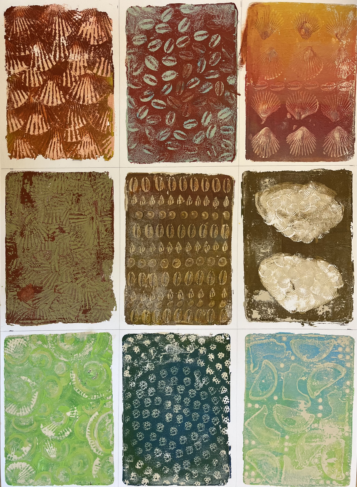
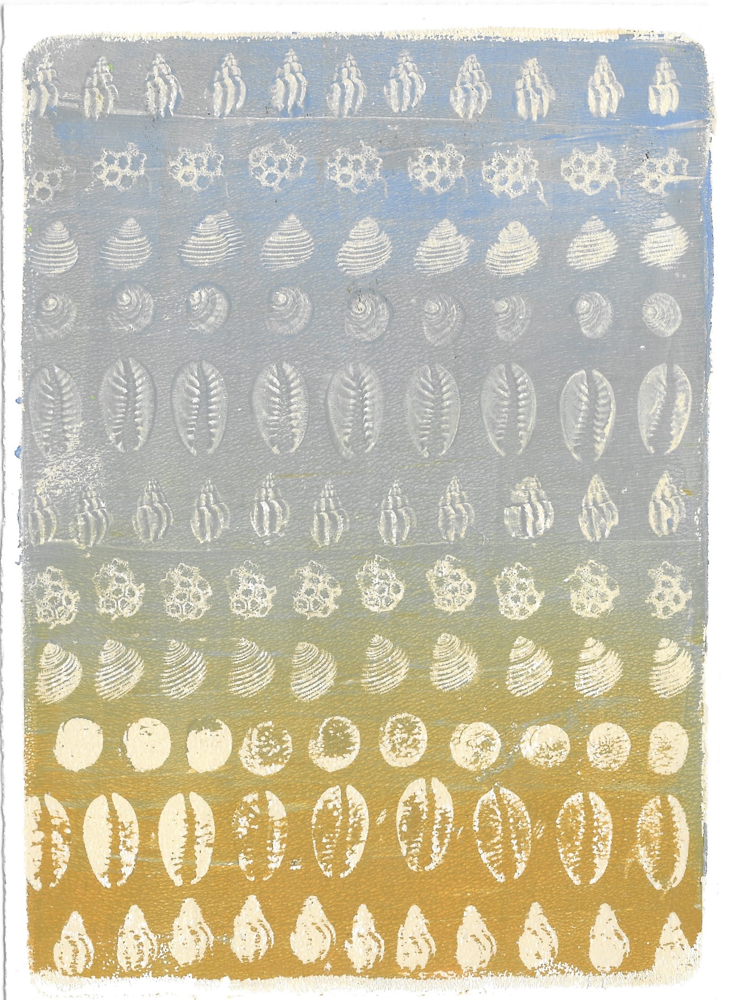
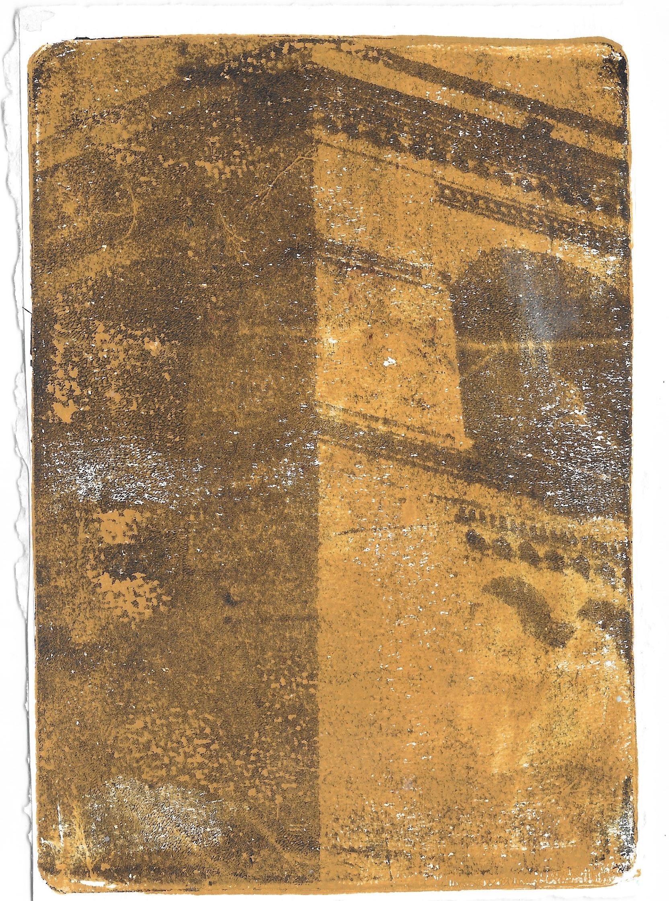
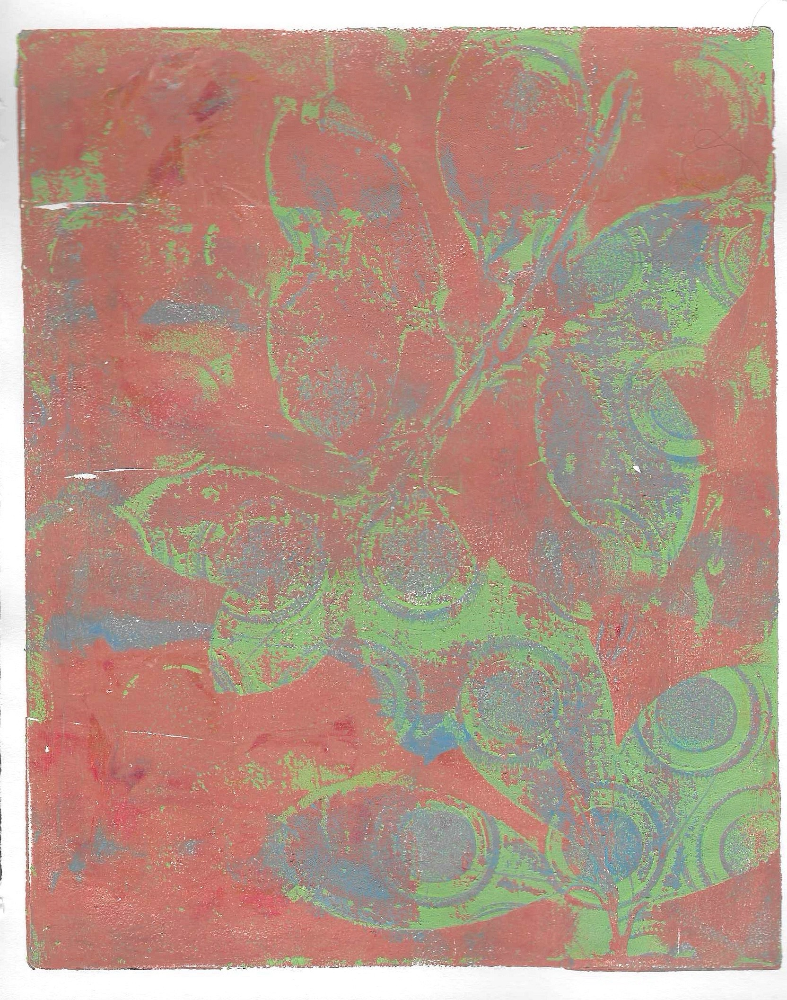
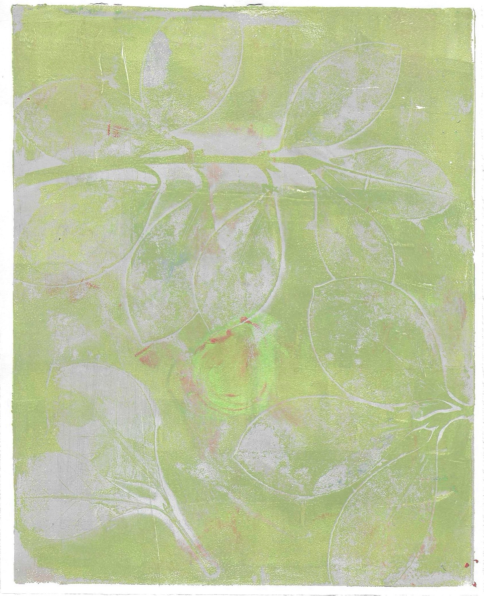

Gelli Printing
MATERIALS
Gelli Plate
Brayer
Acrylic Paint
Scrap Images or Textures
Acrylic Paint
The materials that you are working with are essential to whether you will get a good print or not. While just about any gelli plate will work, the quality of the paint you use as well as the condition of your scrap images will greatly affect the final result.
Acrylic paint can come in many different bodies and consistencies, so it is important to be aware of it as it might affect the outcome of your print. When spread thin, some cheaper paints will become extremely translucent, as well as some pigments just in general. While this isnt a bad thing, it can be important to consider as your image might not be as visible, or on the other side you can use it to create a cool effect.
Heavier bodied acrylics usually work best for printmaking, as they are the most similar to the consistency of traditional printmaking inks. That being said, the gelli plate really works best with just acrylic paint. You can also experiment with different acrylic mediums, like retarder or gel medium to get different effects.
Layering
Layering your prints lets each color and texture build on the one before it. The first step always involves using a brayer to layer a thin layer of paint. There are infinite ways to give texture or color to this layer of paint, by pressing obejcts into it, images into it, or drawing on top of it. You can mix in other colors to get a blended effect aswell. Some popular textures include leaves, shells, bubble wrap, caps, newsprint, and inkjet images. With inkjet or magazine images, you are able to transfer high-contrast outlines onto your plate without any additional technology.
Allow each layer to dry slightly before adding the next one so the colors stay distinct. Leaving parts of earlier layers visible creates depth and gives the final print more movement.
Scrap Images
Scrap images give a gelli print a lot of character, so it is worth experimenting with. Thin papers like tissue, deli paper, and old book pages pick up detail well, while thick or glossy papers can keep the paint from transferring. Old maps and sheet music work well too, but the ink in them can sometimes lift and mix with the paint, so test a small piece first.
Stencils
Stencils can be bought, but it is much more interesting to make them yourself. Cut shapes from cardstock or plastic folders, or use flat found objects like lace, string, and doilies. Press the stencil onto the painted plate, then either pull a print with it in place for a negative image, or lift it off first and print the shape left behind. Doing both with the same stencil gives you a matching pair of prints.
Pulling the Print
Once the plate is ready, lay your paper down and smooth it with your hand, working from the center out to the edges. Press gently but evenly, since too much pressure can squeeze the paint and blur the details. Peel the paper back slowly from one corner and watch how the paint transferred. Don't worry if the first print is not what you imagined. The paint left on the plate after a pull, often called a ghost print, tends to be softer and more subtle than the first. Many printmakers pull a ghost print on purpose and use it as a base layer for a later print.
Tips for Better Prints
Work quickly, especially in warm rooms. Acrylic starts to set within a couple of minutes, so have your paper, stencils, and textures laid out before you pick up the brayer.
Use less paint than you think you need. A thin, even layer transfers cleanly, while a thick one can pool, smear, and take much longer to dry. If your print looks muddy, it is usually because their is too much paint.
Keep a stack of scrap paper nearby for ghost prints, test pulls, and cleaning off your brayer. Some of the best results come from "mistakes" that get layered over later.
Try a retarder or slow-drying medium if you want more time to work. It extends the working time of the paint on the plate, which helps with detailed stencils and multi-step designs.
Finally, keep a few of your prints without a finished look in mind. A layer that seems plain on its own often becomes the perfect background once another layer is added on top.
Example Prints




